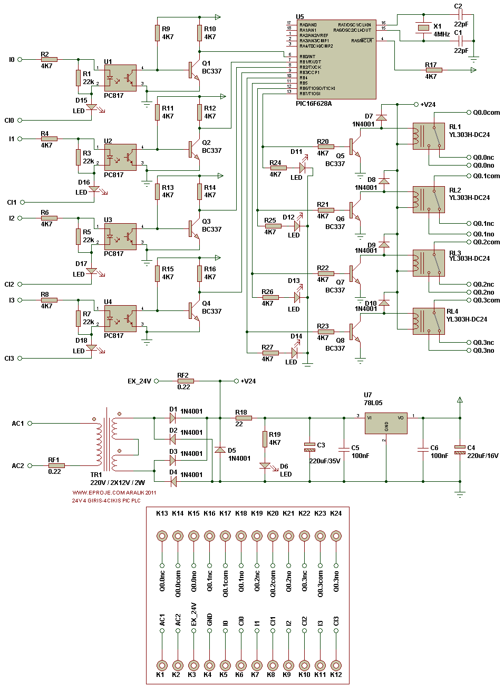
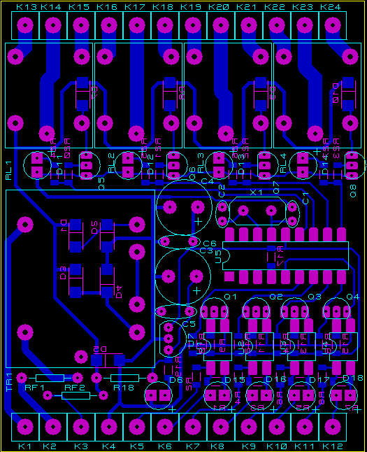

http://cq.cx/ladder.pl adresinden yazılımlarını ve diğer ayrıntılarını alabileceğiniz LADDER LOGIC kullanarak PIC- PLC yapabileceğiniz kart çizimlerimdir.
Açık şema eklendi....
PIC-PLC Açık şema:

Projenin Baskı Devre Çizimi:

Dosyalar :
picplc44.ZIP